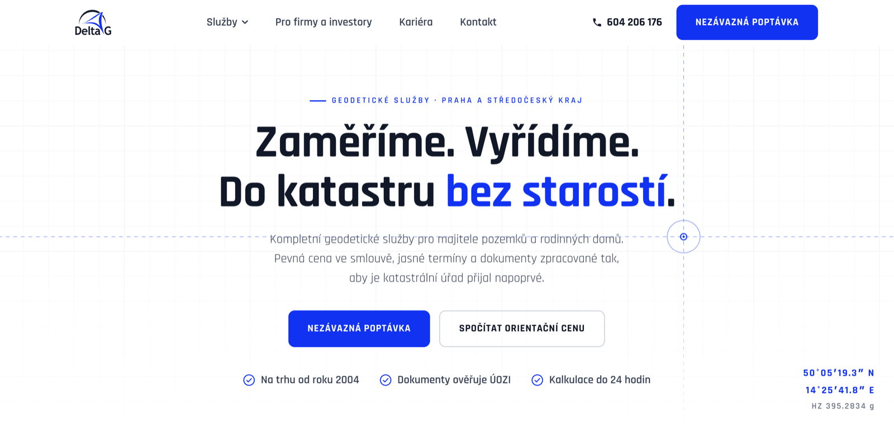
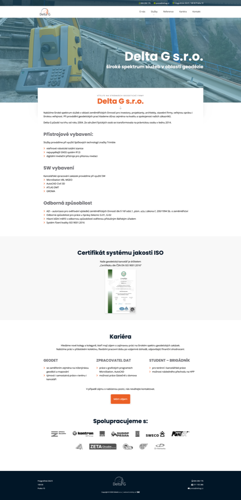
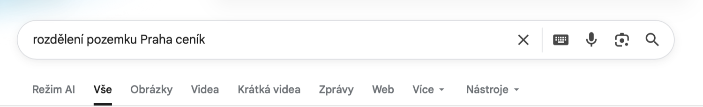
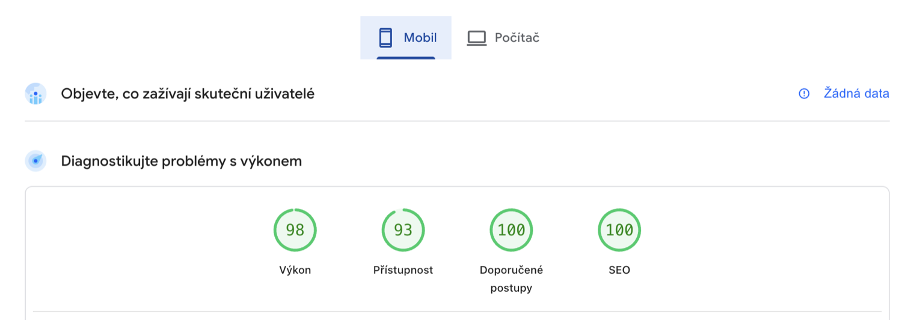

14°25′41.8″ E
±2 mm
Геодезия · Прага · корпоративный сайт под ключ
DELTA G
Антикризисный корпоративный сайт для геодезической фирмы — который удерживает бизнес и открывает новый рынок частных клиентов.
Полный цикл: стратегия · UX · дизайн · анимации · вёрстка · копирайт (CZ) · SEO · аналитика · деплой
00 — О проекте
Геодезическая компания из Праги теряла поток заказов из-за того, что весь её сайт говорил только с крупным бизнесом. Я перестроил её цифровое присутствие так, чтобы оно одновременно удерживало корпоративных клиентов и открывало новый рынок частных заказчиков.
- Клиент
- Delta G s.r.o. — геодезия, Прага, на рынке с 2004 года
- Задача
- не редизайн, а смена бизнес-позиционирования через веб
- Объём
- корпоративный сайт, 11 страниц, две аудитории (B2B + B2C)
- Технологии
- чистый HTML / CSS / JS, GSAP-анимации, без CMS и конструкторов
- Качество
- PageSpeed 98 · 93 · 100 · 100 (Google)
- Роль
- один специалист на всём цикле — от стратегии до продакшена

01 — Контекст
Бизнес под давлением рынка
Delta G десятилетиями держалась на крупных B2B-заказчиках — застройщиках, строительных компаниях, инфраструктурных проектах. Это давало около 75% оборота.
75% оборота держалось на одной аудитории, которая просела
Но рынок изменился. Из-за высоких ипотечных ставок и инфляции девелоперы по всей Европе замораживают проекты. Большие стройки встали — и привычный поток заказов, который годами стабильно кормил компанию, просел. Старые связи перестали давать прежний объём.
Чтобы пережить спад, компании нужен был второй источник дохода — частные клиенты: люди, которым надо разделить участок под Прагой, вынести границы перед забором, оформить дом в кадастр. Рынок большой и стабильный. Проблема была в том, что Delta G была для него фактически невидима.
02 — Диагноз
Старый сайт работал против компании
Я начал не с дизайна, а с аудита существующего сайта. И он оказался корнем проблемы.

Сайт был сделан для «больших дядей» и отлично отпугивал всех остальных:
- Непробиваемый жаргон. Обычный человек, которому надо разделить участок, не понимает ни слова — и закрывает вкладку.
§ 16f odst. 1 zák. č. 200/1994 Sb.vteřinové robotické totální staniceGNSS systém R12i - Масштаб пугает, а не привлекает. Допуски к железным дорогам, сертификаты ISO, тяжёлое оборудование. Частник решает: «это контора для гигантов, моя задача им неинтересна или будет стоить космос».
- Ноль прозрачности. Цен нет, сроков нет, объяснений «зачем это вообще нужно» нет.
- Слабые точки захвата. Единственная кнопка — невнятное «Mám zájem». Ни расчёта, ни понятного «оставьте заявку».
- Одна аудитория. Сайт умел разговаривать только с профессионалами и полностью игнорировал растущий частный спрос.
Вывод был жёстким: сайт успешно отталкивал именно тех клиентов, которые теперь нужны для выживания.
03 — Стратегия
Разделить аудитории,
не потеряв ни одну
Ключевое решение, которое определило весь проект: не делать «ещё один сайт», а развести два мира внутри одного корпоративного присутствия.
Частнику
человеческий язык, выгоды, снятие страхов перед кадастром и урядами, понятные цены, быстрый расчёт и заявка.
Бизнесу
отдельная страница с профессиональным каталогом, терминологией и допусками. Корпоративный вес сохранён — ничего не «опустили».
Поиску
сеть отдельных страниц под конкретные частные запросы, чтобы ловить клиентов прямо из Google.
04 — Что сделано
Не «причесали», а пересобрали
Два входа в один бизнес
Главная встречает частника: оффер «Zaměříme. Vyřídíme. Do katastru bez starostí», выгоды вместо терминов, проработанные страхи. Отдельная страница «Pro firmy a investory» держит весь тяжёлый B2B-каталог на профессиональном языке. Один бренд, две точки входа, ноль потерянных посетителей.
Сеть SEO-страниц — почему сайт, а не лендинг
Человек вечером вводит в Google «rozdělení pozemku Praha ceník». Это горячий клиент — с деньгами, конкретной задачей и намерением заказать. Если под этот точный запрос нет отдельной страницы — его забирает конкурент. Один лендинг тут бессилен: Google не показывает внутренние секции по узким запросам.

Поэтому я построил 6 автономных посадочных страниц — под каждую частную услугу. У каждой свой заголовок под реальный запрос, свои цены, анимированная схема и блок FAQ. Это не «копии ради объёма» — это шесть ловушек платёжеспособного органического трафика, работающих без оплаты за рекламу.
Анимации как доказательство точности
Геодезия — это про миллиметры, и сайт транслирует это подсознательно. Все анимации сделаны на GSAP вручную и работают на смысл, а не на «вау». Посетитель не читает «мы точные» — он это видит и чувствует.
Калькулятор и захват заявок
Чтобы превратить интерес в лид, я добавил квиз-калькулятор: три простых вопроса — и человек получает ориентировочную цену прямо на сайте, не уходя гуглить к конкурентам. Все формы — заявка, калькулятор, B2B-запрос, отклик на вакансию — реально отправляют заявки на почту владельца за секунды (проверено сквозным тестом). Сайт работает не как витрина, а как канал продаж.
Полноценный корпоративный сайт, а не одна страница
- Карьерная страница с формой отклика — компания растёт и нанимает геодезистов без рекрутера.
- Страница контактов с картой, реквизитами и живым индикатором часов работы.
- Политика конфиденциальности и cookie-баннер с opt-in — до согласия не собирается ни один байт. Это юридическая защита: за нарушение GDPR чешский ÚOOÚ штрафует ощутимо.
- Сквозная корпоративная шапка с выпадающим меню услуг и единый футер на всех 11 страницах.
Социальные сигналы и бренд-детали
Самостоятельная фавиконка, OG-изображение для соцсетей (ссылка в WhatsApp/Telegram выглядит как от солидной компании, а не голым URL), Twitter-карточка, единая дизайн-система. Мелочи, которые в сумме формируют доверие до первого клика.
05 — Технический фундамент
Быстрее, дешевле в владении
и лучше для SEO
Сайт написан на чистом коде — без WordPress, без Tilda, без React и конструкторов. Это не вопрос вкуса, это три бизнес-выгоды.
Нет тонны лишнего кода, который тащат конструкторы и тяжёлые фреймворки. Отсюда — 98 из 100 по производительности на мобильных.
Поисковику отдаётся чистая, идеально читаемая страница. Конструкторы и SPA на React часто мешают индексации — здесь этой проблемы нет в принципе.
Нет вечной подписки на конструктор (5–15 тыс. крон в год навсегда). Сайт принадлежит компании, лежит где угодно, не сломается от обновления плагина.
Плюс под капотом — оптимизация, за которую обычно никто не благодарит, но без которой нет этих цифр: самостоятельно захостенные шрифты, сжатые изображения, устранённые сдвиги вёрстки (CLS), доступность на 93/100.

06 — Итог
Что в итоге заложено
Сайт только запущен, поэтому честно: вместо выдуманной статистики — то, что реально построено и будет работать.
- Компания впервые видима для частного клиента и говорит с ним на его языке.
- 6 SEO-страниц начинают собирать органический трафик по коммерческим запросам — поток, который растёт со временем и не требует платы за рекламу.
- Рабочая воронка: от поискового запроса или рекламы → к понятной странице → к расчёту цены → к заявке на почту.
- B2B-направление не потеряно, а получило достойную отдельную площадку.
- Техническая база — скорость, SEO, доступность — на уровне, которого нет у большинства конкурентов в нише.
07 — Моя роль
Один человек на всех этапах
Там, где в агентстве работала бы команда из нескольких человек:
- бизнес-анализ и стратегия позиционирования
- UX-архитектура и проектирование двух аудиторий
- визуальный дизайн и дизайн-система
- кастомные анимации (GSAP)
- вёрстка и фронтенд (чистый код)
- копирайтинг на чешском — отдельно B2C и B2B
- SEO-фундамент: структура, мета, sitemap, schema.org, перелинковка
- интеграция форм и доставка заявок
- настройка деплоя и автообновления
Нужен такой же подход
к вашему бизнесу?
Я не делаю «просто красивые сайты». Я разбираюсь, как устроены ваши продажи, и строю цифровое присутствие, которое решает бизнес-задачу.